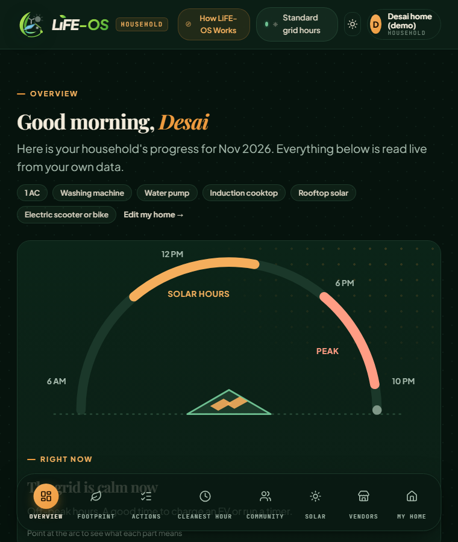
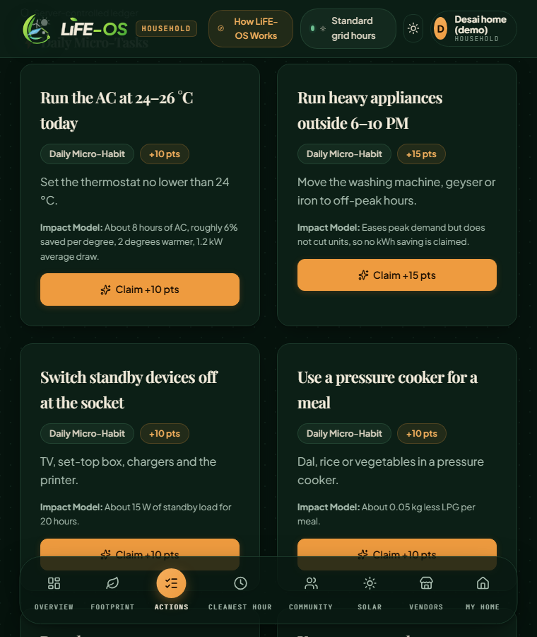
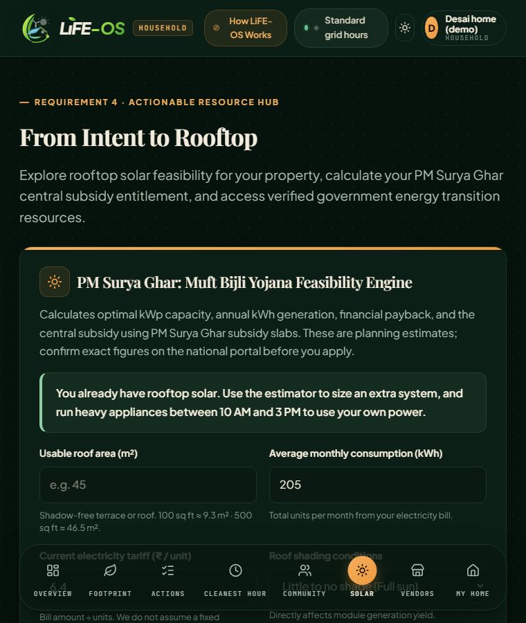
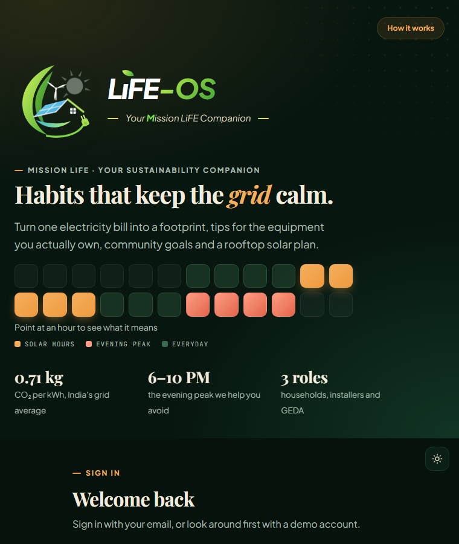
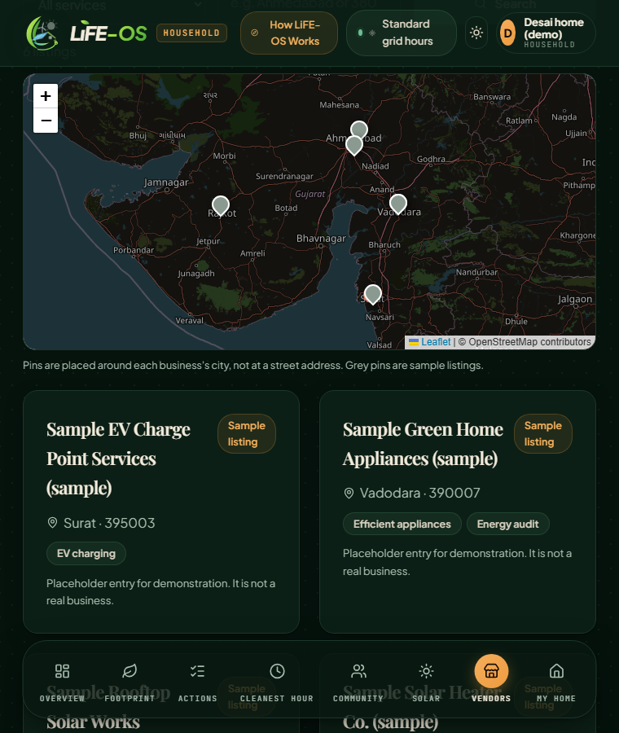
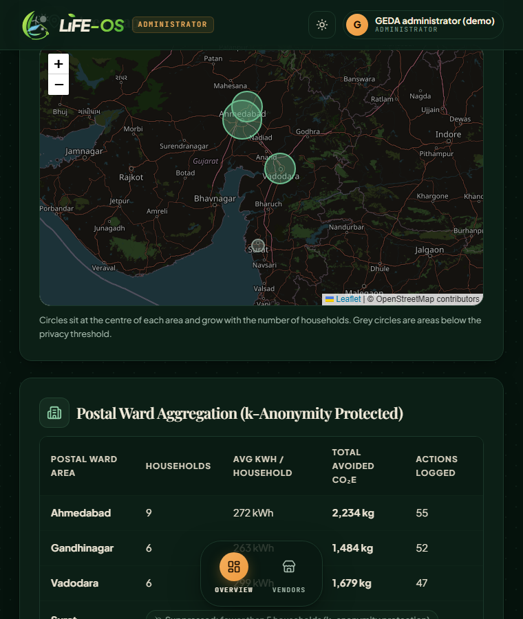

HACKCULT '26 · HC26-GEDA01 · GREEN ENERGY & SUSTAINABILITY
Your electricity bill, turned into a footprint, savings, a solar plan and community action.
An interactive Mission LiFE citizen engagement application for the Gujarat Energy Development Agency.
Next.js · TypeScript · Supabase PostgreSQL
1 · THE PROBLEM
Carbon calculators ask dozens of questions, so most people quit before seeing a number.
Households respond to a lower bill. Kilograms of CO₂ alone rarely change a habit.
Interest stalls at "is it worth it for my roof?" with no honest estimate and no clear next step.
Who it serves: residential consumers, local communities, and state administrators monitoring regional conservation.
2 · THE SOLUTION
One-minute onboarding from last month's units. Baseline, monthly trend, travel and LPG add-ons, and a visible calculation.
Suggestions from the user's own bills, the time of day and the home's equipment, each explaining why. Tasks have time windows and a weather rule, enforced on the server.
Points, streaks, levels, shared local and state-wide goals, opt-in leaderboards with trust tiers, and a "Verified citizen" badge for admin-approved photo proof.
Rooftop solar estimate with ranges and assumptions, the steps to apply, and a map-based vendor directory that an administrator approves.
Plus: three roles (household, installer, GEDA administrator), an admin area map with privacy suppression, a bill scanner, and "Cleanest Hour" scheduling.
3 · THE PRODUCT

Dashboard: the day as a Sun Arc, footprint, points

Actions: time windows, weather rule, photo proof

Resource hub: solar estimate with assumptions
3 · THE PRODUCT, ROLES AND MAPS

Welcome: sign in or open a demo household, installer or administrator

Vendor directory on a map, approved by an administrator

Administrator: area map and table, small groups hidden
4 · ARCHITECTURE
5 · DATABASE SCHEMA
| Table | Key columns |
|---|---|
| app_users | id, role, email, password hash, pincode, home and equipment, leaderboard_opt_in, is_demo |
| footprint_snapshots | user_id, period, electricity_kwh, bill_amount_inr, total_kg, factor_version |
| task_completions | user_id, task_id, dedupe_key, completed_on, points, impact_kg |
| challenges | region_prefix, metric, target, starts_on, ends_on |
| challenge_members | challenge_id, user_id |
| vendors | name, services, pincode, status (pending, approved, rejected) |
| bill_proofs | user_id, period, consumer fingerprint, readings, units |
| task_proofs | user_id, task_id, status; the photo is deleted after review |
6 · TECH STACK AND DECISIONS
Next.js 15React 19TypeScript strictTailwind 4RechartszodSupabase PostgreSQLVitest
143 unit tests cover footprint maths, nudges, solar sizing, points rules, task time windows and the weather rule, streaks, challenge progress, admin suppression, bill reading and checks, photo-proof storage and IST date handling. Lint, typecheck and production build all pass. Live on Render with Supabase PostgreSQL.
7 · WHY IT STANDS OUT: TRUST BY DESIGN
The scanner reads a bill on the device. Readings times the multiplier must equal the billed units, and one bill cannot serve two accounts.
Each suggestion states why it fired and how its saving was estimated.
One reward per window, a daily cap, and server-side scoring. Big actions need an admin-approved photo, deleted after review.
Leaderboards are opt-in. Admins see only areas with 5+ households, grouped by 3 PIN digits.
Every estimate shows its assumptions, and unverified inputs are labelled as such in the interface.
8 · SCALABILITY AND LIMITATIONS
GROUP BY left(pincode,3) HAVING count(*) >= 5) with paginated ranking.9 · ROADMAP
Pilot LiFE-OS with a DISCOM and a few wards: verified tariffs, real bill data, and measured savings.
github.com/bharathvaj125/Life-os · LiFE-OS is an independent hackathon project, not an official GEDA product.